企業イベント
セミナー、式典、展示会など、企業イベントの登壇者や出演者の印象を整えます。
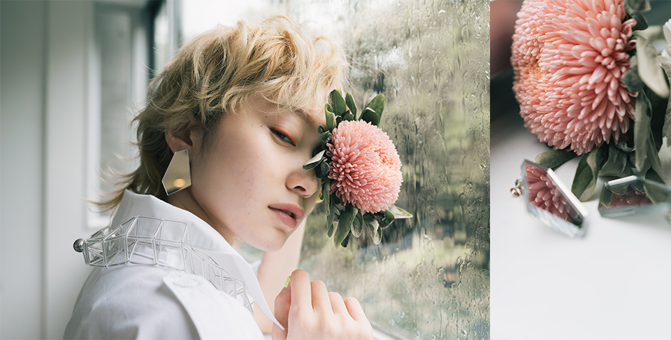
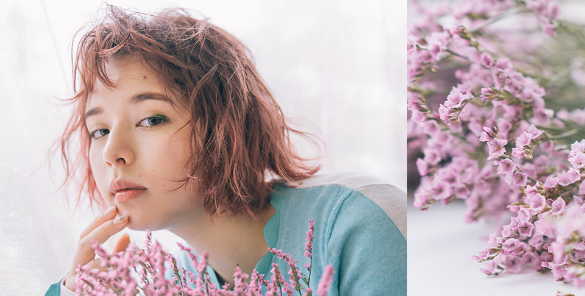
case
セミナー、式典、展示会など、企業イベントの登壇者や出演者の印象を整えます。
動画撮影や番組収録など、長時間の現場にも合わせたヘアメイクに対応します。
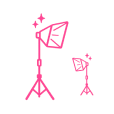
広告写真やカタログ撮影など、媒体の雰囲気に合わせた仕上がりをご提案します。
SNS、Web、PR素材など、目的に合わせて見え方を調整いたします。
プロフィール写真や宣材撮影に合わせて、自然で印象に残るヘアメイクを行います。
point
広告撮影・映像制作・イベントなど、案件内容や出演者の人数、現場の進行に合わせて最適な出張ヘアメイクスタッフを手配します。美容師免許を持つスタッフを中心に、得意分野や経験を見極めてご提案します。
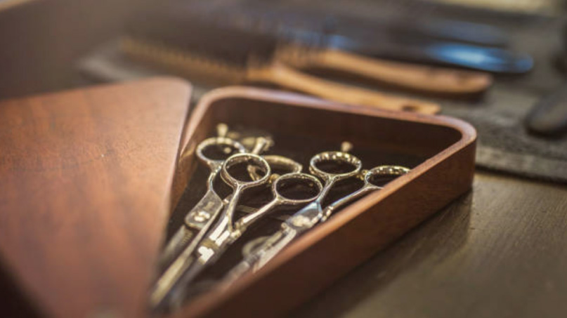
撮影現場や企業イベント、ブライダル、宣材写真など、さまざまな現場を経験したヘアメイクスタッフが対応します。限られた準備時間や当日の変更にも配慮し、進行を止めないスムーズな現場づくりをサポートします。
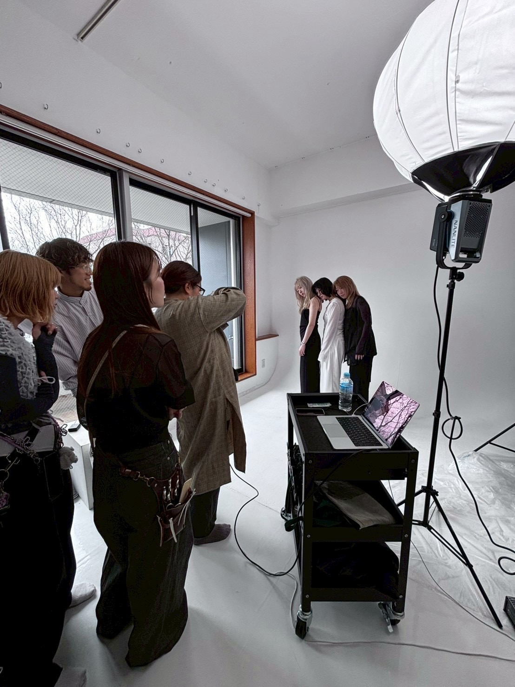
急な撮影・イベント・プロフィール撮影のご相談にも、内容や場所、必要人数を確認したうえで迅速に調整します。日程が近いご依頼でも、まずはLINEからお気軽にご相談いただけます。
about hair & makeup artist


ヘアメイク師®は、美容師とヘアメイクアーティストの技術をあわせ持ち、現場で活躍するプロフェッショナルです。
ヘアメイクアーティストは、タレントやモデル、一般の方のメイクやヘアスタイリングを担います。一方で、美容師免許がなければ髪を切ったりカラーリングしたりすることはできません。
美容師免許を持つヘアメイク師®なら、撮影・イベント・ブライダルなど、さまざまな現場やニーズに柔軟にお応えできます。
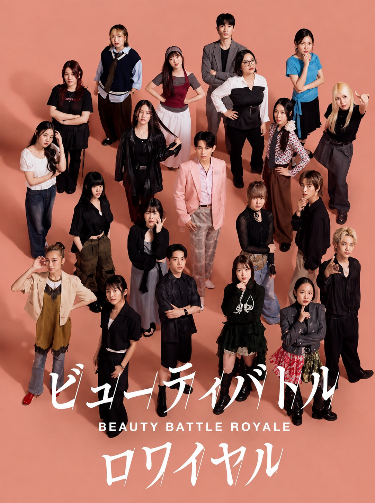
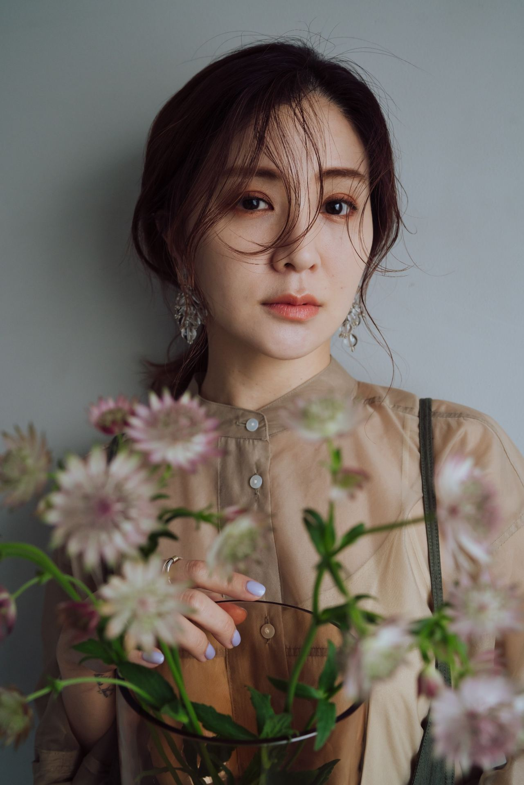
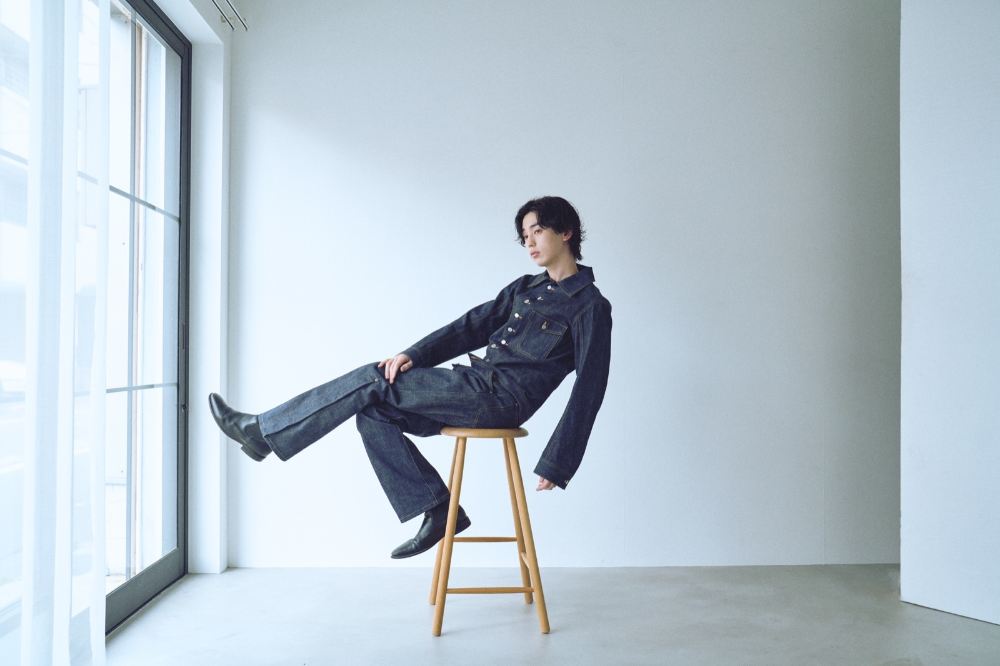
works
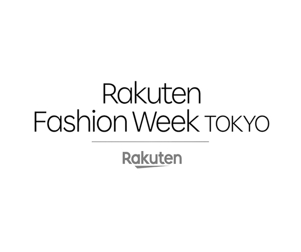
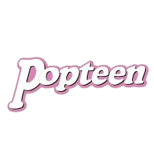
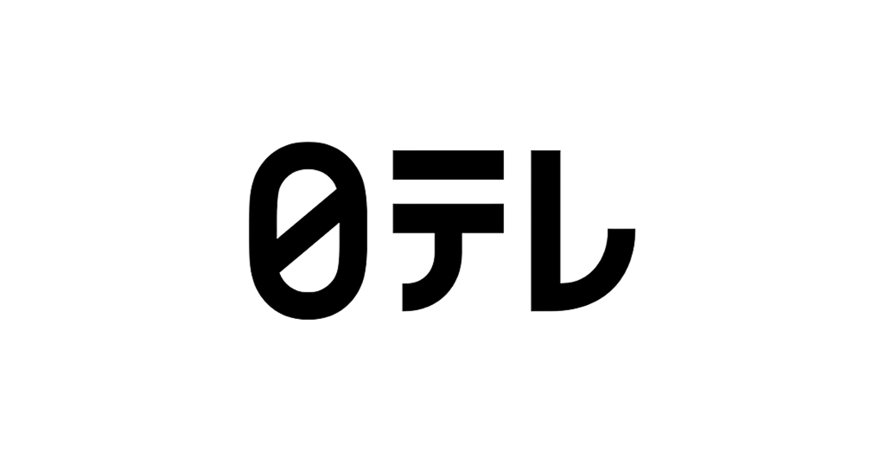
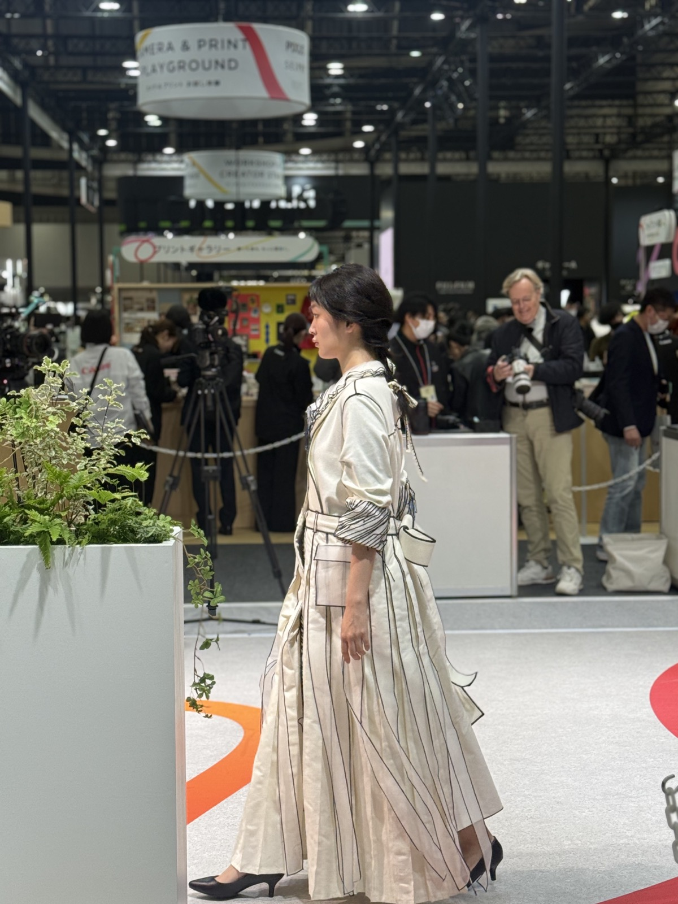
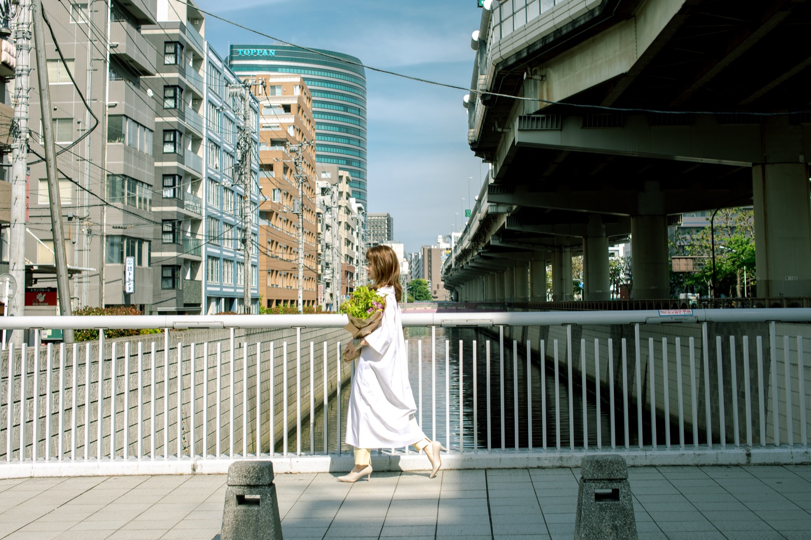
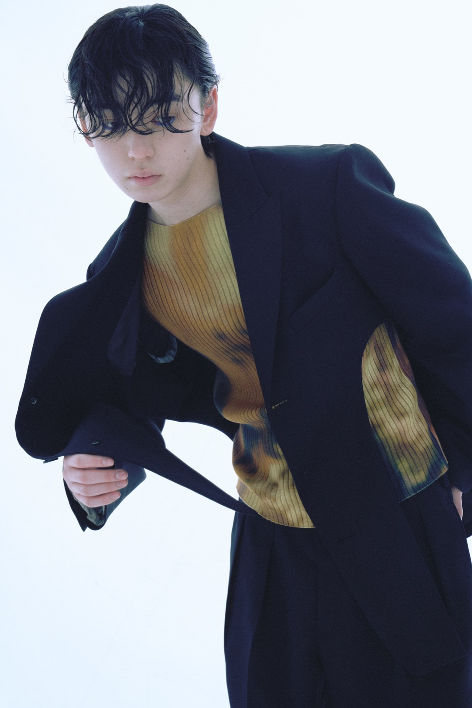
有名なエンタメ業界での実績も多数あるので
安心してお任せいただけます。
common concerns
01撮影やイベントの雰囲気に合う
ヘアメイクをどう依頼すればいいか
わからない
02限られた準備時間やロケ先でも
現場進行に合わせて
対応してもらえるか不安
03企画や出演者が確定前でも
相談していいのか迷っている
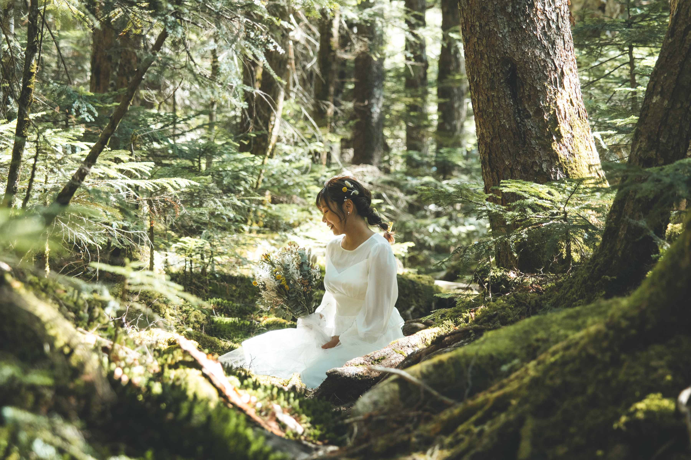
広告撮影・映像制作・イベントなど、さまざまな現場に対応してきた経験をもとに、案件内容やご要望に合わせた最適なヘアメイクスタッフをご提案。現場をスムーズに進めるパートナーとしてサポートいたします。
LINEで今すぐお問い合わせ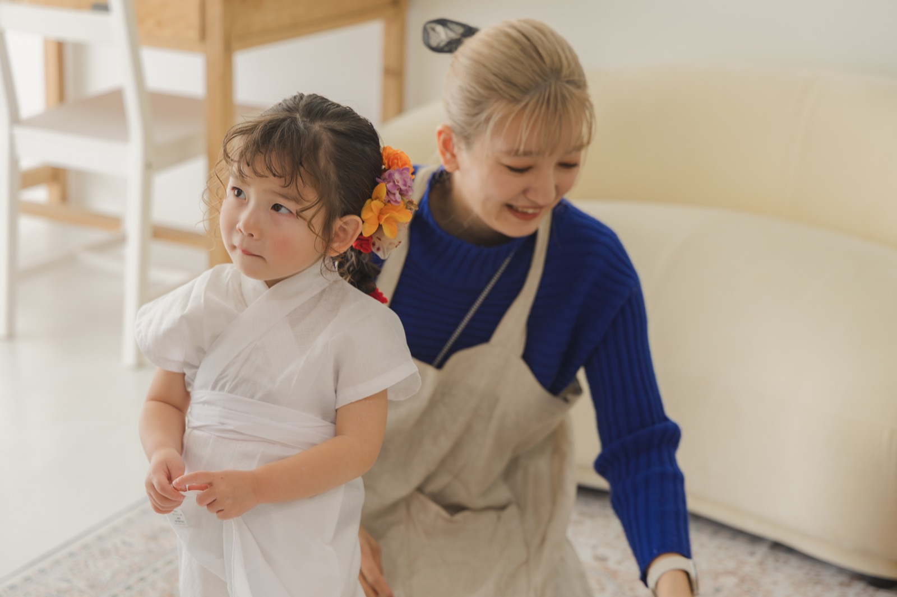
plan
| 時間 | 料金 |
|---|---|
| 8時間 | 30,000円〜 |
| 4時間 | 20,000円〜 |
| 延長30分 | 3,000円〜 |
| 旅費交通費 | 実費 |
※担当スタイリストにより料金が変動する場合があります。
| 時間 | 料金 |
|---|---|
| 8時間 | 15,000円〜 |
| 4時間 | 10,000円〜 |
| 延長30分 | 1,500円〜 |
| 旅費交通費 | 実費 |
※料金は全て税抜価格です。
voice
flow
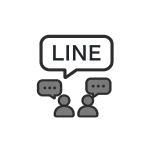
LINEよりご相談ください。撮影内容や日程、場所などを確認いたします。
案件内容を確認し、対応可能なスタッフや料金をご案内します。
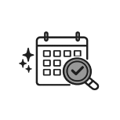
指定の現場へスタッフが訪問し、進行に合わせてヘアメイクを行います。
作業完了後、内容に応じてお支払い手続きをお願いいたします。
faq
広告・映像制作、企業イベント、ブライダル、七五三、成人式、プロフィール撮影、宣材写真、ライブ・舞台など、さまざまな現場に対応しています。案件内容に合わせて最適なヘアメイク師®をご提案いたします。
もちろん可能です。案件内容やスケジュールが未確定の段階でも、お気軽にご相談ください。ご要望をお伺いしながら、最適なヘアメイクプランをご提案いたします。公式LINEにてお問い合わせください。
1名でのご依頼から、複数名の現場まで柔軟に対応しております。撮影規模や出演者数に合わせて必要なスタッフを手配し、スムーズな現場運営をサポートいたします。
company
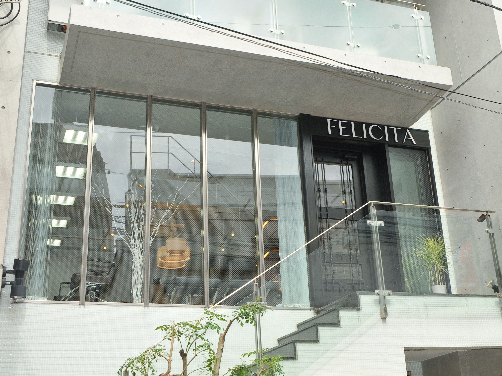
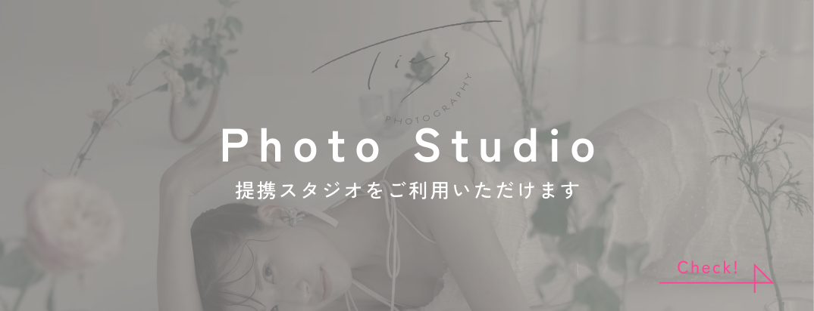
出演者や撮影内容、現場の規模に合わせて、
経験豊富なヘアメイクスタッフを手配いたします。
まずはお気軽にLINEでご相談ください。出演者や撮影内容、
現場の規模に合わせて、
経験豊富なヘアメイクスタッフを
手配いたします。まずはお気軽に
LINEでご相談ください。